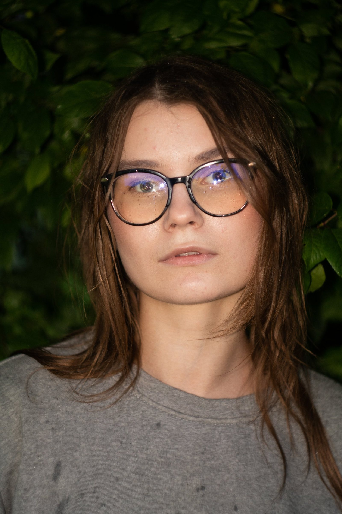
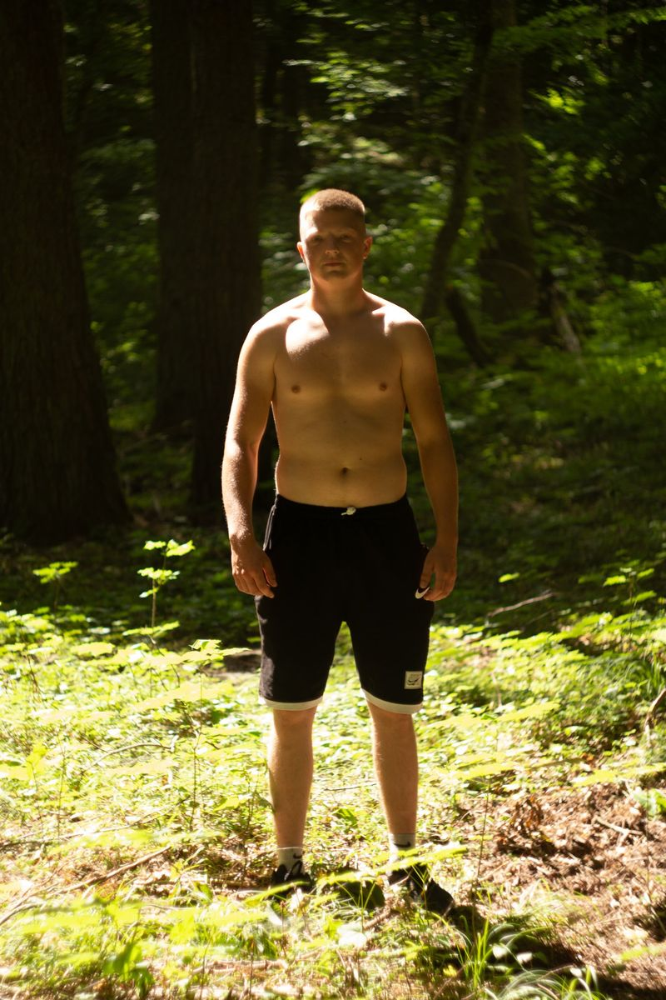
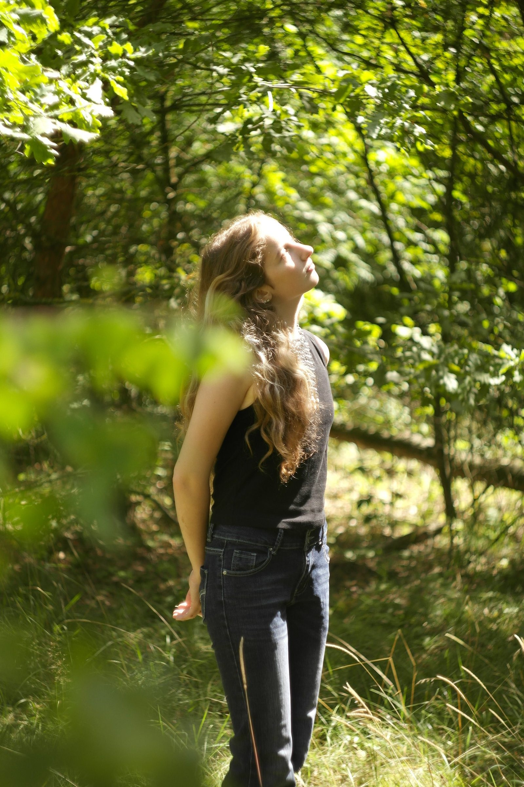

01
Взгляд
Свет в стекле
Портрет · Лес
Фотопроект · природа и человек
Четыре портрета среди листвы — о свете, который меняет всё, и о тишине, в которой человек становится собой.
Смотреть

Серия выросла из простого наблюдения: среди деревьев люди ведут себя иначе. Взгляд становится мягче, паузы — длиннее, а свет будто договаривается с каждым по отдельности.
Здесь важны не позы, а промежутки между ними. Четыре кадра, в которых лес — не фон, а ещё один герой.
Нажмите на фотографию, чтобы открыть её во весь экран. Внутри — навигация стрелками, клавиатурой или свайпом.
Портрет · Лес
Портрет · Тень
Портрет · Солнце
Портрет · Воздух
Всего четыре кадра. Но у каждого — свой ритм.

«Лес не просит
быть кем-то другим.»
Последний кадр серии — момент, когда можно просто поднять голову и вдохнуть.